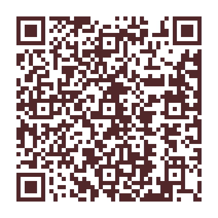

المرساه للتموين والحفلات
Almarsah Catering

امسح الرمز، واكتشف التفاصيل.
+966538835050
تصوّر موقع مستقل وغير معتمد من صاحب النشاط.
المعاينة من تصميم علي.
ينبع وجدة
امسح الرمز لفتح الموقع، أو حمّله للمشاركة والطباعة. احفظ بيانات النشاط لتبقى طرق التواصل قريبة.
اترك المساحة البيضاء حول الرمز عند الطباعة، وتأكد من وضوحه قبل استخدامه.
Almarsah Catering

امسح الرمز، واكتشف التفاصيل.
+966538835050
تصوّر موقع مستقل وغير معتمد من صاحب النشاط.
المعاينة من تصميم علي.